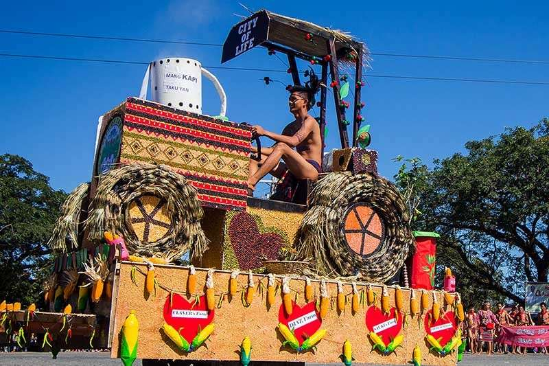

What are peculiar events in Balbalan, Kalinga?
Balbalan, Kalinga is also infused peculiar events such as traditions, festivals and well preserved occasion. In this section, we will be introducing some of them.
Balbalan, Kalinga is also infused peculiar events such as traditions, festivals and well preserved occasion. In this section, we will be introducing some of them.
| Image from Hello Travel.com |
|---|
Manchatchatong Festival is the yearly devour that Balbalan Municipality is celebrating. "Manchatchatong" implies meeting up of the general population in Balbalan as a gathering. This will fortify our solidarity, participation and love for our district to pick up advance. This occassion is watched each first seven day stretch of March. This year, it was commended on March 4-6, 2018. On the principal day, it began with the parade and next was the mass directed by father Gil Dulay. Amid the mass, he spiced his "petition over the endowments" with the kulilipan form.
| Image by Sunstar Baguio |
|---|
"Bodong" is a Kalinga term roughly translated to "peace pact." A Bodong is undertaken under two main conditions or events: "gayyem" or when two people are in a relationship (to show sincerity in continuing the courtship) and "patay" when there is an existing problem or conflict between tribes or sub-tribes.
|  |
|---|
| Image by Sunstar Baguio |